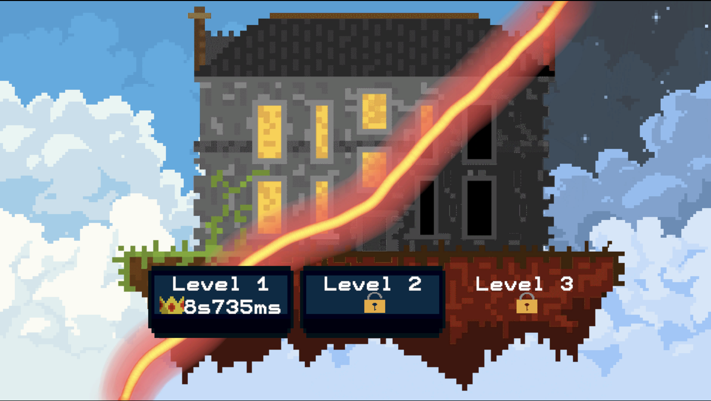
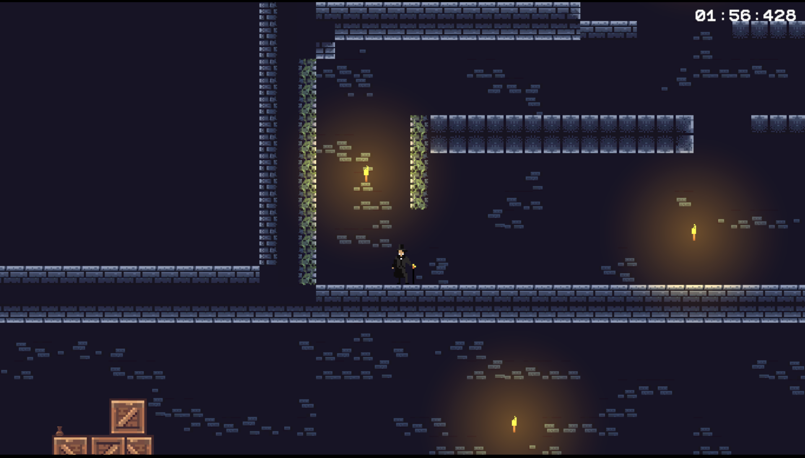

<section>
    <h1>Fil Rouge</h1>
    <h2>Jeux vidéo 2D</h2>
    <h3>03/02/2025 - 21/02/2025 (3 semaines)</h3>
    <p>
        Développement d'un platformer sur le thème de Dr.Jekyll et Mr.Hyde en C# avec Unity.
    </p>
    
    
    <script src="https://code.jquery.com/jquery-3.6.0.min.js"></script>
    <script language="Javascript">
        $(document).ready(function() {
            $("#home").click(function() {
                $("#content").load("pages/home.html");
            });
        });
    </script>
</section>